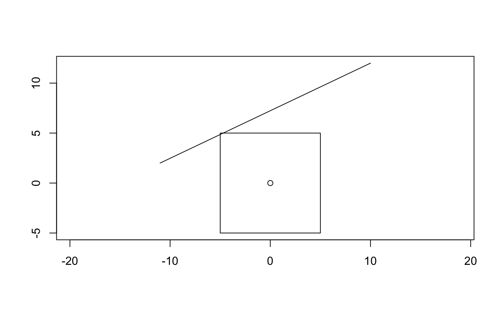
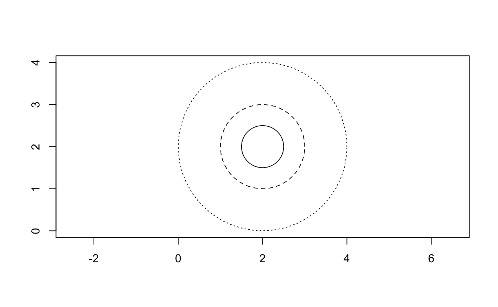

The geovctrs package was designed from the ground up to be extensible. The package itself does little, but provides S3 classes and generics you can use to make processing functions and/or geometry classes that “just work” with the tidyverse and other geometry packages. There are three types of extensibility covered in this vignette: extracting functions, transforming functions, and new geometry classes.
To start, we’ll load the package and define a vector of geometries to use as examples.
library(geovctrs) library(tibble) geometries <- geo_wkt( c( "POINT (0 0)", "LINESTRING (10 12, -11 2)", "POLYGON ((-5 -5, 5 -5, 5 5, -5 5, -5 -5))" ) ) geo_plot(geometries)

Extracting functions take a vector of geometries and provide some kind of information for each feature. Examples from the geovctrs package include geo_n_coordinates(), geo_geometry_type(), and geo_summary(): all of these take a vector of geometries and return a vector of the same size as the input (note that the “size” of a data frame is the number of rows, after vctrs::vec_size()).
geo_n_coordinates(geometries) #> [1] 1 2 5 geo_geometry_type(geometries) #> [1] "point" "linestring" "polygon" geo_summary(geometries) #> # A tibble: 3 x 7 #> geometry_type is_empty n_coordinates n_geometries srid coordinate_dime… #> <chr> <lgl> <int> <int> <int> <int> #> 1 point FALSE 1 1 0 2 #> 2 linestring FALSE 2 1 0 2 #> 3 polygon FALSE 5 1 0 2 #> # … with 1 more variable: first_coordinate <xy>
All of these functions work with a variety of data types: it doesn’t matter whether you have a character vector, a geovctr, or a data frame with a geometry column, the function knows to coerce the input to a geovctr by default:
geo_n_coordinates(geo_wkt("POINT EMPTY")) #> [1] 0 geo_n_coordinates("POINT EMPTY") #> [1] 0 geo_n_coordinates(tibble(geom = geo_wkt("POINT EMPTY"))) #> [1] 0
This magic happens because the geovctrs package provides as_geovctr() implementations for character vectors and data frames, and because the geo_n_coordinates() is a generic that calls as_geovctr() in its default implementation. Following this pattern, if you would like to make an extracting function that works on any geometry type, all you need to do is call as_geovctr() in your default implementation:
is_linestring <- function(x) { UseMethod("is_linestring") } is_linestring.default <- function(x) { is_linestring(as_geovctr(x)) } is_linestring.geovctr <- function(x) { geo_geometry_type(x) == "linestring" }
Here, is_linestring() will work on all the types supported by as_geovctr():
is_linestring(geometries) # geovctr_wkt/geovctr #> [1] FALSE TRUE FALSE is_linestring(as.character(geometries)) # character #> [1] FALSE TRUE FALSE is_linestring(tibble(geometries)) # data.frame #> [1] FALSE TRUE FALSE
All extractors in the geovctrs package follow this pattern, usually providing a C++ function that works with well-known binary and faster implementations for the simpler geometry types. For example, in this case, we know that a geo_segment() will always be a linestring, but a geo_xy() and a geo_rect() will never be:
is_linestring.geovctrs_segment <- function(x) { rep_len(TRUE, length(x)) } is_linestring.geovctrs_xy <- function(x) { rep_len(FALSE, length(x)) } is_linestring.geovctrs_rect <- function(x) { rep_len(FALSE, length(x)) } is_linestring(geo_segment(geo_xy(0, 0), geo_xy(1, 1))) #> [1] TRUE is_linestring(geo_xy(0, 0)) #> [1] FALSE is_linestring(geo_rect(0, 0, 1, 1)) #> [1] FALSE
For well-known text, a regular expression can often be a fast approximation of the default method. Here, a linestring will always match the regular expression ^\s*LINESTRING (a string starting with LINESTRING with an optional amount of whitespace at the beginning). Thus, we can implement a fast version of is_linestring() for well-known text:
is_linestring.geovctrs_wkt <- function(x) { grepl("^\\s*LINESTRING", x) } is_linestring(geometries) #> [1] FALSE TRUE FALSE
Most extracting functions in geovctrs do this as well: implement faster S3 generics for the simple geometries, with default method that works on any geovctr (usually implemented in C++).
Transforming functions take a geometry vector and return a geometry vector of the same size. Examples from the geovctrs package include geo_envelope() (which returns the feature-specific bounding box) and geo_first_coordinate(). Similar to the extracting functions, both of these accept any object that can be coerced to a geovctr using as_geovctr():
geo_envelope(geometries) # geovctr_wkt/geovctr #> <geovctrs_rect[3]> #> [1] (0 0↗0 0) (-11 2↗10 12) (-5 -5↗5 5) geo_envelope(as.character(geometries)) # character #> <geovctrs_rect[3]> #> [1] (0 0↗0 0) (-11 2↗10 12) (-5 -5↗5 5) geo_envelope(tibble(geom = geometries)) # data.frame #> # A tibble: 3 x 1 #> geom #> <rect> #> 1 △ (0 0)…+4 #> 2 △ (-11 2)…+4 #> 3 △ (-5 -5)…+4
There’s a few things here that are different than extracting functions. First, transformers called on a geovctr can return any geometry vector that is also a geovctr. In this case, that means that we get back a geo_rect() no matter what type of geovctr we give geo_envelope(). The casting and concatenation rules implemented in geovctrs (primarily by means of vctrs::vec_cast() and vctrs::vec_ptype2()) mean that these vectors can be used interchangeably. Transformers in geovctrs always return the simplest geometry type possible, which for envelopes and bounding boxes means a geo_rect().
Second, transformers try to maintain the original data structure. For data frames with exactly one geovctr column, this means that geo_envelope() returns a data frame with the geometry column replaced (again, with any type of geovctr). This magic happens by way of the restore_geovctr() generic, which is called with the initial object and the result of the transformation (this is how the geovctrs package is able to mostly support the sf package out of box).
Following this pattern, if you were to implement a centroid() function (returning the middle of the envelope), you could make it work in the same way by implementing a set of generics:
centroid <- function(x) { UseMethod("centroid") } centroid.default <- function(x) { result <- centroid(as_geovctr(x)) restore_geovctr(x, result) } centroid.geovctr <- function(x) { envelope_tbl <- as_tibble(geo_envelope(x)) geo_xy( (envelope_tbl$xmax + envelope_tbl$xmin) / 2, (envelope_tbl$ymax + envelope_tbl$ymin) / 2 ) }
Here, centroid() will work on all the types supported by as_geovctr():
centroid(geometries) # geovctr_wkt/geovctr #> <geovctrs_xy[3]> #> [1] (0.0 0) (-0.5 7) (0.0 0) centroid(as.character(geometries)) # character #> <geovctrs_xy[3]> #> [1] (0.0 0) (-0.5 7) (0.0 0) centroid(tibble(geom = geometries)) # data.frame #> # A tibble: 3 x 1 #> geom #> <xy> #> 1 · (0.0 0) #> 2 · (-0.5 7) #> 3 · (0.0 0)
The geovctrs package provides three “generic” geometry vector classes (geo_wkt(), geo_wkb(), and geo_collection() can represent any feature) and three simple geometry vector classes (geo_xy(), geo_segment(), and geo_rect() are all efficient representations of specific features). To make a new type of vector work with geovctrs functions, you can either (1) implement as_geovctr() and (optionally) restore_geovctr(), or (2) go all-out and implement your class as a vctrs class that inherits from "geovctr".
As an example, consider a class that represents a vector of circles. Circles can be parameterized by their center and their radius, whereas generic geometry types would need to store a large number of coordinates. A simple class based on vctrs would look like this:
library(vctrs) # base constructor for developers new_circle <- function(x = list(center = geo_xy(), radius = double()), detail = 50L) { vec_assert(x$center, geo_xy()) vec_assert(x$radius, double()) vec_assert(detail, integer()) vctrs::new_rcrd(x, class = "circle", detail = detail) } # convenient constructor for users circle <- function(center = geo_xy(), radius = double(), detail = 50) { new_circle( vec_recycle_common( center = vec_cast(center, geo_xy()), radius = vec_cast(radius, double()), ), detail = vec_cast(detail, integer()) ) } # rcrd vectors require a format method format.circle <- function(x, ...) { sprintf("<circle: %s->%s>", format(field(x, "center")), field(x, "radius")) } # create a vector of circles circles <- circle(geo_xy(2, 2), c(0.5, 1, 2))
Now we have a vector that stores circle information, but to do anything useful we have to implement a function that turns each circle into a set of coordinates. Recalling your pre-calculus class, you could do so for a single circle like so:
circle_coordinates <- function(center, radius, detail = 50) { angles <- seq(0, 2 * pi, length.out = detail) geo_xy( field(center, "x") + cos(angles) * radius, field(center, "y") + sin(angles) * radius ) } circle_coordinates(geo_xy(1, 1), 2) #> <geovctrs_xy[50]> #> [1] (3.00000000 1.0000000) (2.98358003 1.2557543) (2.93458973 1.5073092) #> [4] (2.85383351 1.7505340) (2.74263741 1.9814351) (2.60282724 2.1962211) #> [7] (2.43669870 2.3913651) (2.24697960 2.5636630) (2.03678514 2.7102855) #> [10] (1.80956669 2.8288252) (1.56905517 2.9173357) (1.31919979 2.9743636) #> [13] (1.06410316 2.9989724) (0.80795395 2.9907582) (0.55495813 2.9498558) #> [16] (0.30926989 2.8769368) (0.07492342 2.7731986) (-0.14423332 2.6403445) #> [19] (-0.34460178 2.4805560) (-0.52289192 2.2964568) (-0.67617621 2.0910698) #> [22] (-0.80193774 1.8677675) (-0.89811149 1.6302164) (-0.96311831 1.3823173) #> [25] (-0.99589079 1.1281404) (-0.99589079 0.8718596) (-0.96311831 0.6176827) #> [28] (-0.89811149 0.3697836) (-0.80193774 0.1322325) (-0.67617621 -0.0910698) #> [31] (-0.52289192 -0.2964568) (-0.34460178 -0.4805560) (-0.14423332 -0.6403445) #> [34] (0.07492342 -0.7731986) (0.30926989 -0.8769368) (0.55495813 -0.9498558) #> [37] (0.80795395 -0.9907582) (1.06410316 -0.9989724) (1.31919979 -0.9743636) #> [40] (1.56905517 -0.9173357) (1.80956669 -0.8288252) (2.03678514 -0.7102855) #> [43] (2.24697960 -0.5636630) (2.43669870 -0.3913651) (2.60282724 -0.1962211) #> [46] (2.74263741 0.0185649) (2.85383351 0.2494660) (2.93458973 0.4926908) #> [49] (2.98358003 0.7442457) (3.00000000 1.0000000)
The easiest way to construct a geovctr is using the geo_collection() family of functions, all of which take coordinates and return a geometry vector. For a single circle, we could construct polygons like so:
circle_polygon <- function(center, radius, detail = 50) { # first and last coord must be identical coords <- circle_coordinates(center, radius, detail) geo_polygon(c(coords, coords[1])) } circle_polygon(geo_xy(1, 1), 2) #> <geovctrs_collection[1]> #> [1] POLYGON (3 1)…+50
To turn our vector of circles into a geovctr of the same length, we can implement as_geovctr():
as_geovctr.circle <- function(x, ...) { x_data <- vec_data(x) features <- lapply( seq_len(vec_size(x)), function(i) circle_polygon( x_data$center[i], x_data$radius[i], attr(x, "detail") ) ) vec_c(!!!features) } circles <- circle(geo_xy(2, 2), c(0.5, 1, 2)) as_geovctr(circles) #> <geovctrs_collection[3]> #> [1] POLYGON (2.5 2)…+50 POLYGON (3.0 2)…+50 POLYGON (4.0 2)…+50
Now, the circles vector works with geovctrs functions!
geo_envelope(circles) #> <geovctrs_rect[3]> #> [1] (1.501027304 1.500256892↗2.5 2.499743) #> [2] (1.002054607 1.000513784↗3.0 2.999486) #> [3] (0.004109214 0.001027568↗4.0 3.998972) geo_plot(circles, lty = 1:3)

The hard way to make a vectorized geometry class is to make a full vctrs::vec_cast() and vctrs::vec_ptype2() implementation that ensures your class can be casted to the other generic geometry types. This is outside the scope of this vignette, but you may find the expect_geovctr() function and vignette("s3-vector", package = "vctrs") useful. The main advantage of a full vctrs implementation is that users will be able to combine your class with other geometry vectors in a dplyr::bind_rows() operation (or similar).